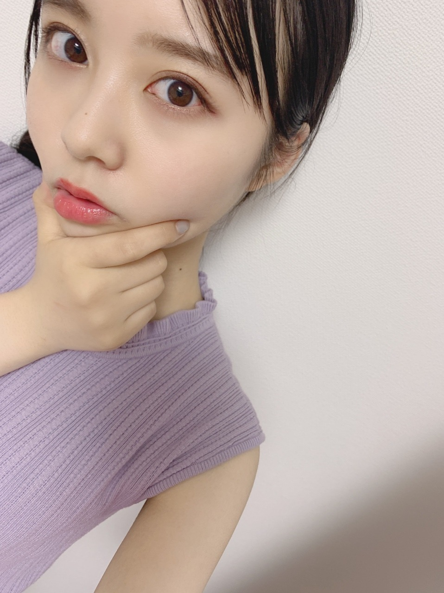
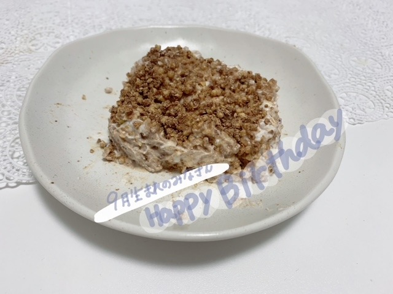
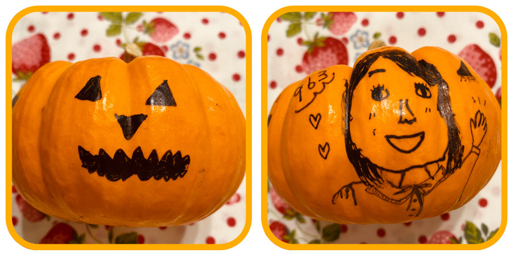
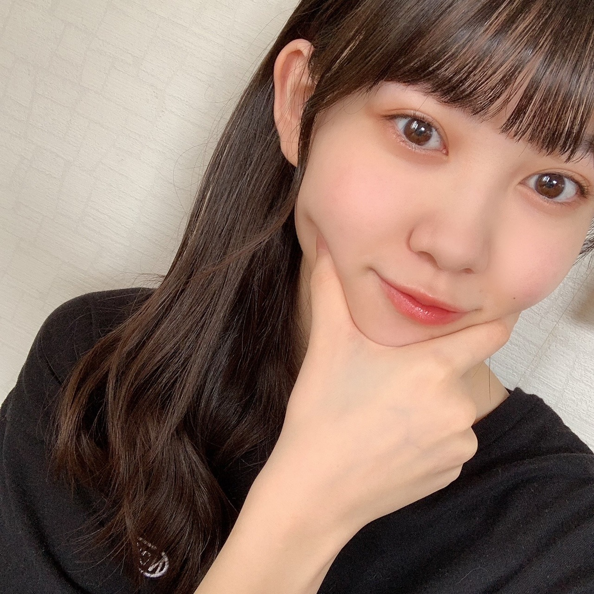

2020/0930Wed綺麗で、素敵な色。佐藤璃果
乃木坂46 （新）4期生 岩手県出身
佐藤璃果です。

おでこ
もうすぐ10月ですねぇ
ノースリーブとは
だいぶ前におさらばしました。

おでこ
でしょうか？？( ˙-˙ )
~~~~~~~~~~~~~~~~~~~
考えに考えて、
サイリウムカラーは、
桃✖️ターコイズ
にしようと思います！
無いサイリウムカラーです！
この組み合わせ、とても綺麗だと
ターコイズは11番です。
青緑のような素敵な色味です。
桃の方は、"ガーベラ（ピンク）"と、
"ストレプトカーパス"の花言葉を
ターコイズの方は、"緑色のバラ"の
花言葉を意識してみました。
ガーベラ（ピンク）は"感謝"、"思いやり"
ストレプトカーパスは"ささやきに耳を傾けて"
"信頼に応える"
緑色のバラは"穏やか"、
"あなたは希望を持ちえる"
という花言葉です！
桃とターコイズのカラーを見て
友達と見た地元の紫陽花を
思い出すんですよね。
地元は沢山、紫陽花が咲いていたので、
それも理由の一つです！
紫陽花といえば紫では？
と思う方もいると思います。
桃とターコイズを混ぜたら
紫っぽいお色味になるようです。
混ぜたら乃木坂カラー。
そこも素敵なところです。
紫陽花は色んな花言葉がありますが、
特に好きなのは"ガクアジサイ"の
"謙虚"という花言葉です。
皆さんもこのお色味を
好きになってくださると嬉しいです。
優柔不断すぎて永遠に迷っていました。
このカラーを持ってらっしゃらない方が
居たらすみません、。
その方は、ターコイズは
サイリウムのカラーを見たら、
水色が1番近いかなと思うので、
代用する場合はそちらでお願いしたいです！
❁
ちなみにストレプトカーパスは、
私の誕生日8月9日の誕生花でもあるんです！
❁
~~~~~~~~~~~~~~~~~~~
9月27日、中村麗乃さん
❁お誕生日おめでとうございます❁
手足が長くて、
ブログもいつもメイクやお洋服など、
本当に可愛くていつも楽しく見させて頂いています！
いつかお話できたら嬉しいです！
素敵な一年になりますように。
それと、9月27日は日向坂46さんの
髙橋未来虹ちゃんのお誕生日でした！
おめでとう~♡♡
9月生まれの皆さん、
お誕生日おめでとうございました！
素敵な一年になりますように。
ケーキの写真

今回は、
ヨーグルトとカッテージチーズで作った
レアチーズケーキです。
いつもコメント
本当にありがとうございます。
今回はノキザカスキッツについてと、
TIFについてのコメントが多かったかな(*^^*)
見てくださってありがとうございます！
TIFに私達も出演させて頂けることに
感謝の気持ちを忘れず、
4期生、新4期生のみんなとの
初めてのパフォーマンスを、
皆さんに楽しんで頂ければと思います。
今は支えられ、
助けられながら毎日を過ごしています
秋が来たかと思えば、
乃木坂の夏の様な熱い気持ちを味わえる
素敵な日になりますように。
精一杯努めます。
10月4日に会いましょう！！
~~~~~~~~~~~~~~~~~~~
明日は林瑠奈っ！
バナナミルク美味しいんだって！！
（伝言ゲームじゃないよby奈於ちゃん☺︎）
林は飲んだことありそう！！
~~~~~~~~~~~~~~~~~~~
素敵な一日になりますように。
この間の猫舌SHOWROOMで
メイクさんがしてくださった本当に
可愛い髪型をお届け~
前回頭が切れていたので( ˙-˙ )


皆さん、9月もお疲れ様でした~☽･:*
またね~
#32 りか
2020/0929Tueありがとう ☺︎ サイリウムカラー決まったよ！黒見明香(16)
ココを見つけてくださり ありがとうございます♪
乃木坂46 新４期生の黒見明香です。
すこーしだけ自己紹介させてください☺︎
♪:*:･･:*:･･:*:･･:*:･･:*:･･:*:･♪:*:･･:*:･･:*:･･:*:･･:*:･･:*:･♪
黒見 明香（くろみ はるか）
2004年1月19日生まれ 16才
香港生まれ・東京都出身です
あだ名： くろみん・黒見ちゃん
3の倍数9・6・3(くろみ)
と覚えてもらえたら嬉しいです♪
＊

-:-:୨୧:-:- あなた（乃木坂の紫）✖️わたし（いつも真っ直ぐな初心で、癒せる存在に☺︎）手伝ってくれて本当にありがとう〜✩︎⡱
に決定しました！
♬ *。♩*。♬
 -:-:୨୧:-:- のぎおびスクショタイム "ミニハロウィン"ありがとうございました☺︎♡
-:-:୨୧:-:- のぎおびスクショタイム "ミニハロウィン"ありがとうございました☺︎♡【 のぎおび☺︎ 】
⚫︎明日は真夏さんだね！リスペクトしてる先輩に宿題出せてよかったね✨
びっくりして、とても嬉しかったです✩︎⡱
♬ *。♩*。♬
♪:*:･･:*:･･:*:･･:*:･･:*:･･:*:･♪:*:･･:*:･･:*:･･:*:･･:*:･･:*:･♪

-:-:୨୧:-:- ただ今発売中の9月生写真「ジャンプスーツ」オフショットも安定のダブルピース\(//∇//)\いつも同じポーズすぎて恥ずかしい・・・
【 ダブルピース写真シリーズ☺︎ 】

-:-:୨୧:-:- 「のびおび」のカボチャ、実は前日描いたマイパンプキンでしたー！笑
【 TOKYO IDOL FESTIVAL オンライン2020 】
ブログやお手紙で、たくさんのコメントや感想送って下さり
本当にありがとうございます✩︎⡱
今回初めてコメントしてみたよー！というあなたも、
何回目のコメントなんだーと送ってくれるあなたも、
大切な時間を使ってお話しして下さり
本当にありがとうございます✨
あなたに出逢えた奇跡に、感謝しながら、
大事に、一つずつ全部読ませて頂いています((〃ω〃))
皆さんのことを知ることが出来る、
私の１日の中で『１番幸せな時間』です♩
直接お話しできる時が、 待ち遠しいです✩︎⡱
＊
すっかり寒くなってきちゃって、
本当に、今日も一日 お疲れ様でした✩︎⡱
きっと心も、身体も、しんどい時もあるかと思います。。
どうぞ、皆さんが 少しでも
ひとときリラックスできますように...✩︎⡱
と願っています(*´-`)
初めて会える日を、楽しみに待っています♪
＊
明日は、璃果ちゃんですよー♬
読んでくださり、本当にありがとうございます☺︎
次回も、会えたら嬉しいなぁ✨
またねヾ(･ω･*)
くろみはるか☺︎
☆ 本日のあなたのラッキーナンバー：❹ と ❻
♪:*:･･:*:･･:*:･･:*:･･:*:･･:*:･♪:*:･･:*:･･:*:･･:*:･･:*:･･:*:･♪
・
・
・
＜ちょこっとアンコール♬笑＞
⚫︎珍しい名前ですね。黒木さんといえば宮崎県がルーツの人が多いようですが黒見さんはどこかルーツがあるのでしょうか？
西日本、中国地方の可能性が高そうですーヾ(･ω･*)o
♬ *。♩*。♬
⚫︎トマトマリネもミートソースもどちらも食べたくなっちゃいましたー
⚪︎卵焼き、からあげ、肉じゃが嬉しいです☺︎
♬ *。♩*。♬
⚫︎寮生活で、海外の方と一緒に住むのでちょっぴり不安なのですが、便利な英語ってありますか？
⚫︎写真みたいに記憶されてるのわかる！人や物に強い興味があるんだと思います。覚えてたことで人を助けることができてから、これに悩むことはなくなりました。
＊
⚫︎職業柄、電話で予約頂くときに声で「あ！あの人だ！」って分かるよ！
⚫︎黒見ちゃんは写真のように場面を記憶できるって言ってたけど、テストとかそしたらノート見れば満点なのでは...！！！笑
まるで、ドラ◯もんの「暗記パン」欲しいですよねー！笑
でも、なぜか顔だけなの〜汗
なんでだろー教科書やノートは全然・・・・
⚪︎悩んでいたことの後日談も、伝えてくれてありがとう。
⚪︎闘病中のあなたも、今頑張ってることが、未来の光になりますように・・・！信じて願っています。一緒に頑張ろうね (. ≧ω≦)ﾉ
♬ *。♩*。♬
10月2日は林瑠奈ちゃん♡
10月3日は遠藤さくらちゃん♡
お誕生日ですね♪
そして、お誕生日を迎えるあなたへ・・
✨HAPPY BIRTHDAY✨
どうぞ素敵な一年になりますよう✩︎⡱
♪:*:･･:*:･･:*:･･:*:･･:*:･･:*:･♪:*:･･:*:･･:*:･･:*:･･:*:･･:*:･♪
ここまで読んでくださったアナタ、ほんとうにありがとう♡
またねヾ(･ω･*)
2020/0928Monポーズ迷走中☺︎弓木奈於


2020/0927Sunよそ見 松尾美佑
日曜日です☀︎
皆さん何してますか？？
私は明日小さなテストがあるんですけど、
もうちょこっとだけよそ見して
日曜日を楽しみます¨̮
千葉県出身
高校2年生
16歳の
松尾美佑です

よそ見中
最近ほっぺに指を突き刺しがち
我が家にはきなこちゃんという猫ちゃんが居るんです
過去のブログに何回か写真を載せたことがあるんですけど、
とっても可愛いスコティッシュフォールドちゃんです。
呼び方はきなこさんです。
きなこさんは小さな時から家の中でかくれんぼを開催する事が多くて、
昨日も どこだどこだ( Ꙭ) となりました
凄く上手なんです、隠れるの。
昨日のかくれんぼの発見場所は私の枕の上です。
すやすや寝てました¨̮
最近のゆる〜いお話でしたっ
ちゃんちゃんっ

みつあみ
今日の
乃木坂46の「の」
に私が登場させて頂きます！
私はものすごい人見知りで、
この日初めて岩本蓮加さんとお話をする事に
本っ当に緊張していたんです。
でも、
気付いたら素で私は楽しんでいました。
時間が一瞬に感じるくらい、もっとお話していたいな と本気で思いました
先輩と2人でお話をする事自体がこの日初めてで、不安が沢山でしたが
楽しさの勝ちでした！！
皆さんにも楽しい気持ちが届いたらいいなと思います¨̮
是非聴いてくださったら嬉しいです！

〜お返事〜
✽ もし行けるとしたら過去と未来どっちに行きたいですか？
未来が気になったりもしますが、見ちゃったら未来が変わっちゃうかもなので、
自分が覚えてないくらい小さい時の自分を覗き見しに行ってみたいですᕕ( ᐛ )ᕗ
✽ 美佑ちゃんはどういう系の本とか映画が好きなんですか？？
ハッピーエンドも大好きなんですけど、読んだり見終わった後にしばらくモヤモヤと考えさせられたり、ちょっと怖い 新しい考え方に出会えたりするものも好きです
✽ 美佑ちゃんに質問です！
えびは好き？？
最近ちょこっと好きになりました！
✽ 質問です！
髪の毛は染めた事ありますか？？茶色く見える時と黒く見える時があるので地毛なのかなぁ...？と気になってました!!
染めたことないです！
明るい時間に写真撮ると凄く茶色く見えたり、白い服を着てとると暗く見えたり、面白いです！
9月23日
寺田蘭世さん、お誕生日おめでとうございます！
ブログのお写真がいつもオシャレで素敵でしばらく写真を眺めさせて頂いています。
寺田蘭世さんの選ぶ言葉やお洋服がかっこよくて大好きです。
素敵な1年になりますように、願っています！
そして、今日9月27日
中村麗乃さん、お誕生日おめでとうございます！
中村麗乃さんの女の子の憧れが詰まっているような所が本当に大好きです。
お話できたら嬉しいです！
素敵な1年をお祈りしてます！！
みくにちゃんもおめでとうˊᵕˋ
(日向坂46さん)
明日は〜〜〜
なお〜〜〜〜〜〜〜〜〜〜
バナナミルクは美味しいよ。
次の私のブログの日はもう10月になっているらしいですよ。
早すぎます。
でも10月も好きです。
次は10月に会いましょう〜
ミュウでした¨̮
ばいっっっっっっっっ( Ꙭ )/''

2020/0926Satお疲れ様です！質問に答えました。林瑠奈です。
乃木坂46(新)4期生の林瑠奈です。
神奈川県出身高校2年生16歳
華咲きそうなシックスティーンの林瑠奈です。
負けるなしょげるな林瑠奈、今日も1日頑張るな
(ピンポーン)
るなぴは、作るならどんなジャンルを作りたいですか？
私は、シューティングゲームを作ろうと思ってます！
A 恋愛シミュレーションゲームを作りたいです。
Q 最近よく聞く曲はありますか？
A あります。
Q 最近聴いてる曲教えてください！
A 最近というか、今波に乗って聴いているのは
ミオヤマザキさんの『LINK』です。
あとは永遠にボーカロイドの曲聴いてます。
Q あのね、良ければ聞いてほしいんだけどね、私今好きな人がいて、でもその人には他に好きな人がいて...
自分に自信つけてがんばろう！！って思うけどなかなかその人の好みに近づける気がしなくて...こーゆーときるなちゃんならどうしますか？
自信のつけ方とるなちゃんの好みのタイプ教えてください！！
A 自信の付け方、難しい質問ですね。
偶には自分中心になってみる、とかどうですか。
自信を無くしてしまう原因として、他人と自分を比べてしまうのは仕方のないことです。
でも、比べてしまった時点できっと自分に対して卑屈になってるじゃないですか。
だから、『あの人より全然できない、もう無理トイレに流れたい』じゃなくて、
『あの人が自分よりできただけ、基準はわたし』
比べるのはいいけど、基準を自分にしてみるのはどうですか。
"あの人より"じゃなくて、もっと自分のこと見てあげてくださいね。
好みのタイプってなんですか。
そうですね、ひとつ挙げるとしたら
『白目が綺麗にむけるひと』です。
いや、ふざけてないですよ。本気です。
Q いつもりかちゃんと何時間くらい電話してるの？
A そのときどきによりますよ。最近は断りを入れずに電話をかけてくれることが多くなりました。
嬉しいですね。
Q 女の子の好きな髪型は？
A 本当になんでも好きです。決められないですもん。
でも、普段前髪がある子が急におでこ出してる髪型にしたとき、あれめっちゃ好きです。
Q 日が沈む直前の空気の匂いにときめいて、息が苦しくなる事があります。林瑠奈さんは最近ときめいて息が苦しくなったことはありますか？
A ありますあります。毎日がときめきパレード。
Q 今一番ハマってることって何ー？
A オムライスの絵を描くこと。
オムライス大好きなんですよ、カレーライスもハヤシライスも好きです。
この三大ライス、色々な人に是非振る舞っていただきたいなと思ってます。
Q 料理名人の林が作った最近の料理は何ですか？？
A え、いつから料理名人になったんですか。
びっくりするぐらいできないですよ、料理。
わかりやすく例えると、ダンスよりも苦手なのが料理です。
あ、そういえば。
『もしはやしが一人暮らしするってなったら、道具とか全部不備なく揃えるから、ご飯作りにきてよ』
ってりかに言ったんです。そしたら、
『どうせ何人も連れ込んでるんでしょ、歯ブラシ10本ぐらいあるよ絶対』
って言われました。
さすがに歯ブラシ10本は無いですよね。ね？
Q 過去か未来に行けるタイムマシーンを一度だけ乗る事が出来るとなったらどちらに行きたいですか？
(補足ですが、行ったとしても自分自身に接触、助言等は出来ないものとします)
A 過去に行って、『凄い楽しい夏だった。でも未来に帰らないといけないんだ。』って言ってみたい。
Q イェイ！
なんで最後の挨拶アディオス！なの？？
他の言葉じゃだめなのー？
A イェイ！
沢山コメントしていただいてありがとうございます。
次回もやろうと思うので、是非また書いてください。

前回のブログのコメントでみなさんが褒めてくださった巻き巻き、他にも写真がありました。
...........................................................................
9月23日
寺田蘭世さん、お誕生日おめでとうございます！！
蘭世さんのファッションや言葉のセンスが大好きで、その芸術性にいつもわたしの心が惹かれています。
自分を奮い立たせるためだけでなく、誰かの心に響く。
蘭世さんの口から出る言葉ひとつひとつが、わたしにとって格言のようなもので、わたしの構成要素です。